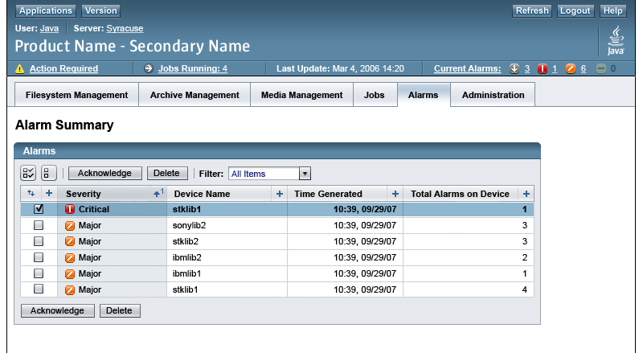
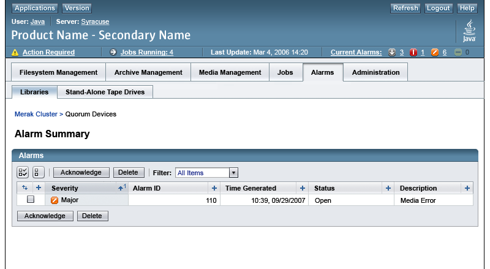
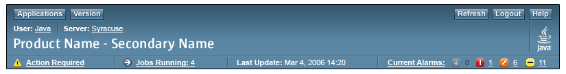
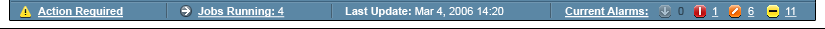
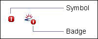
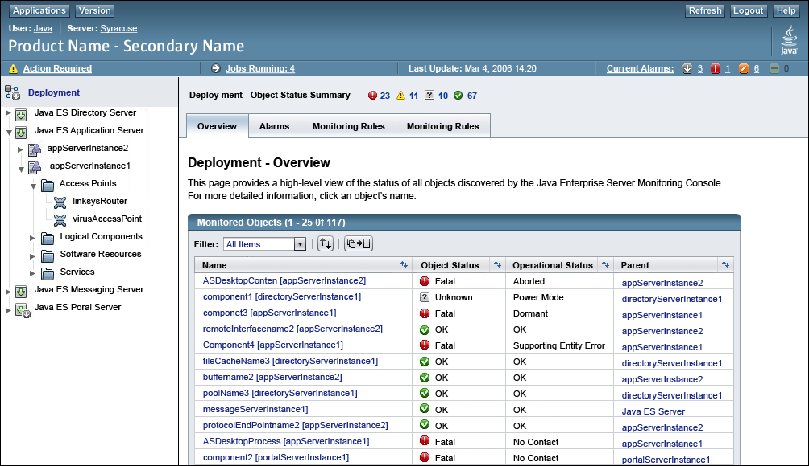
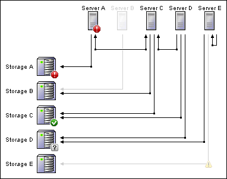
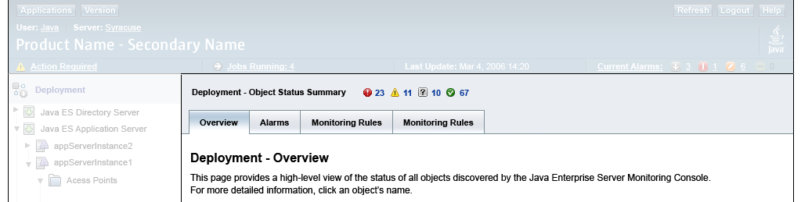

Sun Web Application Guidelines - Version 4.1
Sun Web Application Guidelines - Version 4.1
|
|
|
| [ Table of Contents | 0 Revision History | 1 Introduction | 2 Visual Design | 3 Windows and Pages | 4 Mastheads | 5 Top-Level Navigation | 6 Content Area | 7 Simple Elements | 8 Complex Elements | 9 Tables | 10 Topology | 11 Contextual Help | 12 Search | 13 Wizards | 14 Alerts and Messages | 15 Progress Indicators | 16 Alarms and Status Indicators | 17 Login Page | 18 Version Page | Appendices ] |
How To Use These Guidelines - An Introduction
16 Alarms and Status Indicators
16.1.5.2 Alarms in Topology Views
16.1.5.4 Alarms in the Masthead
16.1.7 Inactive Alarm Expiration
16.2.1.1.1 Object Status Icons and Values
16.2.2.1 Status in a Table View
16.2.2.1.1 Object Status in Tables
16.2.2.1.2 Detailed Status in Tables
16.2.2.2 Status in a Topology View
16.2.2.3 Status in a Tree View
16.2.2.4 Object Status Summary
This chapter addresses Alarms and Status Indicators. Alarms indicate that a particular event has occurred, while Status shows the health of an object. Objects will always have a Status (within a range), while Alarms are triggered by specific events. Alerts (covered in Chapter 14 Alerts and Messages.) are different from alarms or status indicators:
Applications that monitor entities, such as devices, must keep users informed of events involving those entities. Alarms indicate that a particular type of event has occurred.
Alarms vary in their severity, which can range from minor to critical, and in their status, which can progress from open to fixed. Application designers (or, in some cases, end users) define what type of events cause alarms and the corresponding severity of each alarm. Each severity has a corresponding icon or badge.
Applications that generate alarms must be able to:
 Display alarm views (representations of one or more alarms)
Display alarm views (representations of one or more alarms)
 Manipulate alarm views (for example, by sorting them at a user's request)
Manipulate alarm views (for example, by sorting them at a user's request)
 Record each alarm event in a log and inform users when a new alarm event occurs
Record each alarm event in a log and inform users when a new alarm event occurs
This section provides guidelines for designing your application's alarm displays.
To determine when an application should create alarm events, the application's designer or users define alarm conditions which, when true, cause the application to create alarm events. Applications constantly monitor to determine whether any of the defined alarm conditions are true for any of the monitored entities.
Each alarm condition defines either:
A threshold is a value beyond which the alarm condition is true, or can be true, if the alarm condition depends on more than one threshold.
When true, an alarm condition constitutes an alarm on each monitored entity that the condition affects. A monitored entity for which an alarm condition is true is called an alarmed entity.
Each alarm event has a level of severity, known as the alarm's severity. Levels of severity can help an application's users prioritize their work, especially if the application can display many alarms at the same time. Each level of severity has a corresponding alarm graphic that you can use to help users identify alarmed entities. For more information on graphics see 16.1.6 Alarm Graphics. The following table lists the standard levels of severity for alarms, in order from most to least severe.
| Severity | Icon | Severity Description |
|---|---|---|
| Down |
|
There is no response from the monitored entity (or from the device on which it resides). |
| Critical |
|
An alarm condition occurred that seriously impairs service and requires immediate correction. |
| Major |
|
An alarm condition occurred, impairing service but not seriously. |
| Minor |
|
An alarm condition occurred that does not currently impair service, but the condition needs to be corrected before it becomes more severe. |
 Provide only the levels of severity described above.
Provide only the levels of severity described above.
 Always
order alarms from most to least severe.
Always
order alarms from most to least severe.
 All alarms that are displayed must have an associated severity level.
All alarms that are displayed must have an associated severity level.
Some applications can generate many alarms at the same time. To avoid overwhelming users, application designers may decide to allow users to control:
These capabilities help users eliminate irrelevant alarms and notice important alarms.
Some applications may not allow end-users to set the severity of alarms. For example, an application's designer may want to ensure that a device overheating event triggers a Critical alarm.
 When there are no alarms of a given
severity in the masthead, use the dimmed version of the alarm severity icon
instead of the brightly colored icon. This will enable users to quickly
visually determine if there are any alarms of a certain severity.
When there are no alarms of a given
severity in the masthead, use the dimmed version of the alarm severity icon
instead of the brightly colored icon. This will enable users to quickly
visually determine if there are any alarms of a certain severity.
Each alarm event has an alarm status that determines what information is displayed about that alarm.
The table below describes the possible values for an alarm's status.
| Alarm Status | Value |
|---|---|
| Open | This alarm event is neither closed nor fixed, and is not being handled by another user. |
| Acknowledged | This alarm event is neither closed nor fixed and is being handled by the user who set the event's status to acknowledged. |
| Closed | Either the alarm condition associated with this alarm event is no longer true, or a user did something that canceled the alarm. (An alarm event's status can be closed even if nothing has corrected the problem that caused the event.) |
| Fixed | The problem that caused this alarm event has been corrected. |
An alarm whose status is open or acknowledged is called an active alarm. An alarm whose status is closed or fixed is called an inactive alarm. Note that neither "active" nor "inactive" is an alarm status.
It is not necessary to use all the alarm status values. Certain projects may only require the use of Open (in which case, there would be no need to indicate alarm status), or may require only Open and Acknowledged.
To enable users to examine a record of events, your application can display an event log--a complete or partial record of events. An application can have one event log or several. For example, an application might have a log for each monitored entity.
Make sure that users can easily find your application's event logs and manipulate their contents. (For example, with an operating system's utility program for sorting plain text.)
 If users might need event-related information after your application no longer displays it, store that information in a persistent event log--for example, a text file.
If users might need event-related information after your application no longer displays it, store that information in a persistent event log--for example, a text file.
An alarm view is a window or pane that displays representations of alarms. For example, an alarm view might represent alarms in one of the following forms:
Alarm data may be presented in tables, trees, or topology views. If alarm data is displayed on tree or topology views, the alarm information can be considered an augmentation of the data that the tree or topology view displays primarily. In other words, the tree and topology views are not primarily alarm display views. Deciding which views to use depends on the predominant design of the application. For example, in a fault monitoring application a table view would be most appropriate, and if there will be a topology view in the application alarm data would be displayed there also.
Alarm data can be displayed in more than one view within an application. Alarm data displayed in a topology or tree view, however, will be linked to the main alarm view, which should be displayed in a table. Alarm data cannot be only displayed in a topology or a tree view.
 Alarm data must not be lost when the user switches between one type of view and another. In other words, alarm data must be displayed in a topology or tree view if it is displayed in the other views (Summary, Rollup or Details Views).
Alarm data must not be lost when the user switches between one type of view and another. In other words, alarm data must be displayed in a topology or tree view if it is displayed in the other views (Summary, Rollup or Details Views).
| View | When to Use | Benefits |
|---|---|---|
| Table View Summary View | To display all alarms within the application. This is the highest-level table view. | Ability to display Closed and Fixed alarms. |
| Table View Rollup View | To display all alarms on a specific device. | Stand-alone representation of alarms on a single device. |
| Details View | To display detailed information on a single alarm event. | Displays all information on an alarm event, including that which may not be included in other views. Ability to display details for Closed and Fixed alarms. |
| Topology View | To display complex relationships between devices. | Helps visualize complex systems. |
| Tree View | To display multiple parent-child relationships, or sets of objects in containers. | Helps understand hierarchy of large or complex systems. A secondary view that displays Alarms as supplemental information to the Tree View's primary purpose. |
Alarms can be displayed in tree views by adding the appropriate alarm badge to the icon representing the monitored entity. See Appendix G, Badging Icons for details on creating these images.
 When a tree view is collapsed, the container or parent will show the highest-level severity badge of any alarm event within the container.
When a tree view is collapsed, the container or parent will show the highest-level severity badge of any alarm event within the container.
 When a tree view is expanded, the alarm badge must display on the device and also display at the container or parent level. If there is more than one alarm within a container, the container must display the badge of the highest severity alarm.
When a tree view is expanded, the alarm badge must display on the device and also display at the container or parent level. If there is more than one alarm within a container, the container must display the badge of the highest severity alarm.
 Only active alarms are displayed in a tree view (open and acknowledged).
Only active alarms are displayed in a tree view (open and acknowledged).
 While alarm badges may be overlaid on device images in the Tree View, clicking anywhere on the image directs the user to the Device Details page, and not an alarm page. Tree behaviour does not change because of the addition of an alarm badge. Note that this is different than the behaviour of alarm badges in topology views.
While alarm badges may be overlaid on device images in the Tree View, clicking anywhere on the image directs the user to the Device Details page, and not an alarm page. Tree behaviour does not change because of the addition of an alarm badge. Note that this is different than the behaviour of alarm badges in topology views.
Alarms can be displayed in topology views by adding the appropriate alarm badge to the icon representing the monitored entity.
 Clicking on the alarm badge portion of the icon on a topology view takes you to an alarm page. Note that this is different than the behaviour of alarm badges in tree views.
Clicking on the alarm badge portion of the icon on a topology view takes you to an alarm page. Note that this is different than the behaviour of alarm badges in tree views.
 Only active alarms are displayed in a topology view (open and acknowledged).
Only active alarms are displayed in a topology view (open and acknowledged).
 Alarm icons can be overlaid on device icons, representing an alarm or set of alarms on that device. Clicking on the alarm badge portion of the image directs the user to the Rollup or Details View.
Alarm icons can be overlaid on device icons, representing an alarm or set of alarms on that device. Clicking on the alarm badge portion of the image directs the user to the Rollup or Details View.
There will generally be two main alarm pages: an Alarm Summary page and an Alarm Rollup page. If you have alarms displayed in a topology view the badges on those pages will link to these pages, or, in the case of a single alarm, directly to the Alarm Details page.
An Alarm Summary view will contain a list of all alarms within an application with one line for each device. If there is more than one alarm for a device, the row for that device displays the highest alarm severity level for that device. Clicking on the contents of the Total Alarms on Device column links to the Alarm Rollup View. If there is only one alarm for a device on the Alarm Summary page, then clicking on the Total Alarms on Device column links to the Alarm Details for that alarm.
The following is an example of an Alarm Summary View.

 Alarm Summary and Alarm Rollup pages must display the list of alarms in decreasing order of severity: down, critical, major, minor.
Alarm Summary and Alarm Rollup pages must display the list of alarms in decreasing order of severity: down, critical, major, minor.
 This view must contain the following columns at a minimum:
This view must contain the following columns at a minimum:
 The left-most column is the checkbox or radio-button column (unless no actions may be performed upon the Alarms). The following column is always Alarm Severity.
The left-most column is the checkbox or radio-button column (unless no actions may be performed upon the Alarms). The following column is always Alarm Severity.
 Summary and Rollup View pages will display data in columns in the same order. The left-most column is the checkbox or radio-button column (unless no actions may be performed upon the Alarms). The following column is always Alarm Severity.
Summary and Rollup View pages will display data in columns in the same order. The left-most column is the checkbox or radio-button column (unless no actions may be performed upon the Alarms). The following column is always Alarm Severity.
The following additional information may also be included:
 Enable users to manipulate the displayed alarms. For example, enable users to:
Enable users to manipulate the displayed alarms. For example, enable users to:
An Alarm Rollup View will contain a list of all Alarms on a specific device. If a device has three major, one minor and one critical alarm they will all be displayed here in different line items (this is different than the Summary page, in which each line item represents the highest alarm severity level for a given device). Each line item will link to a Details page from the "Alarm ID" column.
The following image shows an Alarm Rollup View that contains only one alarm. If there were many alarms on this device, there would be multiple rows in the table.

 Summary and Rollup View pages must display the list of alarms in decreasing order of severity: down, critical, major, minor.
Summary and Rollup View pages must display the list of alarms in decreasing order of severity: down, critical, major, minor.
 This view should contain the following columns at a minimum:
This view should contain the following columns at a minimum:
 Critical
CriticalThe following additional information may also be included:
 The default table sort should be by Alarm Severity, from most to least severe.
The default table sort should be by Alarm Severity, from most to least severe.
 Summary and Rollup View pages will display data in columns in the same order. The left-most column is the checkbox or radio-button column (unless no actions may be performed upon the Alarms). The following column is always Alarm Severity.
Summary and Rollup View pages will display data in columns in the same order. The left-most column is the checkbox or radio-button column (unless no actions may be performed upon the Alarms). The following column is always Alarm Severity.
 Enable users to manipulate the displayed alarms. For example, enable users to:
Enable users to manipulate the displayed alarms. For example, enable users to:
A details page shows all the information on a specific, single alarm on a single device. It is displayed as a property page.
 This view should contain the following fields at a minimum:
This view should contain the following fields at a minimum:
The following additional information may also be included:
 On Alarm Details pages, enable users to:
On Alarm Details pages, enable users to:
Applications may display current alarms in the status area of the application masthead. Displaying alarms in this area allows users to monitor alarms while they are on any page in the application. For more information see 4.1.4 Status Area.

The number displayed next to the severity symbol represents the total number of alarms of that severity level that were active in the application at the time the screen was last refreshed.
 If alarm reporting is displayed in the status area, only report on and display information about the alarm severities that the application actually uses. Do not show all alarm severities if some of them will always be "0".
If alarm reporting is displayed in the status area, only report on and display information about the alarm severities that the application actually uses. Do not show all alarm severities if some of them will always be "0".
 Order the display of alarms by severity from most to least severe.
Order the display of alarms by severity from most to least severe.
 When alarms are displayed in
the masthead with numbers greater than zero, they must be links shown with white text. The link would go to an Alarm Summary View pre-filtered by severity.
When alarms are displayed in
the masthead with numbers greater than zero, they must be links shown with white text. The link would go to an Alarm Summary View pre-filtered by severity.
 When an alarm count is zero, display a dimmed version of the alarm severity symbol and make the number "0" displayed next to the severity symbol grayed-out, non-linked text.
When an alarm count is zero, display a dimmed version of the alarm severity symbol and make the number "0" displayed next to the severity symbol grayed-out, non-linked text.
The following example shows an
alarm count of zero for the Down alarm.

 If the application shows current alarms in the status area and allows the user to view all alarms on one page, label the alarm information with a clickable label called "Current Alarms" in white. This link should lead the user to an Alarm Summary View. When there are no current alarms do not make the label a link.
If the application shows current alarms in the status area and allows the user to view all alarms on one page, label the alarm information with a clickable label called "Current Alarms" in white. This link should lead the user to an Alarm Summary View. When there are no current alarms do not make the label a link.
An alarm graphic is an application graphic that indicates an alarm's existence and severity. Alarm graphics help users notice alarms and respond to them in the appropriate order.
You can use each alarm graphic as either:
The following image shows the difference between an alarm badge and an alarm symbol.

The following table shows the approved set of alarm graphics and the level of severity that each graphic represents.
| Graphic | Severity | Where to Use |
|---|---|---|
|
Critical | Version for inclusion in tables. For details of use see Chapter 9, Tables. |
|
Critical - Small | Version used in topologies and for badging tree icons. See 10.4.3 Showing Alarm States (for topologies) and 5.4.2.1 Alarm or Status States of Tree Objects (for trees) for details of use. |
|
Major | Version for inclusion in tables. For details of use see Chapter 9, Tables. |
|
Major - Small | Version used in topologies and for badging tree icons. See 10.4.3 Showing Alarm States (for topologies) and 5.4.2.1 Alarm or Status States of Tree Objects (for trees) for details of use. |
|
Minor | Version for inclusion in tables. For details of use see Chapter 9, Tables. |
|
Minor - Small | Version used in topologies and for badging tree icons. See 10.4.3 Showing Alarm States (for topologies) and 5.4.2.1 Alarm or Status States of Tree Objects (for trees) for details of use. |
|
Down | Version for inclusion in tables. For details of use see Chapter 9, Tables. |
|
Down - Small | Version used in topologies and for badging tree icons. See 10.4.3 Showing Alarm States (for topologies) and 5.4.2.1 Alarm or Status States of Tree Objects (for trees) for details of use. |
|
Critical - Masthead | Version for inclusion in the masthead. For details of use, see 16.1.5.4 Alarms in the Masthead. |
|
Major - Masthead | Version for inclusion in the masthead. For details of use, see 16.1.5.4 Alarms in the Masthead. |
|
Minor - Masthead | Version for inclusion in the masthead. For details of use, see 16.1.5.4 Alarms in the Masthead. |
|
Down - Masthead | Version for inclusion in the masthead. For details of use, see 16.1.5.4 Alarms in the Masthead. |
|
Critical - Dimmed | Version for inclusion in the masthead when there are zero alarms of this severity. For details of use, see 16.1.5.4 Alarms in the Masthead. |
|
Major - Dimmed | Version for inclusion in the masthead when there are zero alarms of this severity. For details of use, see 16.1.5.4 Alarms in the Masthead. |
|
Minor - Dimmed | Version for inclusion in the masthead when there are zero alarms of this severity. For details of use, see 16.1.5.4 Alarms in the Masthead. |
|
Down - Dimmed | Version for inclusion in the masthead when there are zero alarms of this severity. For details of use, see 16.1.5.4 Alarms in the Masthead. |
See 2.4 Icons, for more information on icons.
In alarm views, display an alarm graphic on each representation of an alarmed entity or of that entity's alarm events.
For example, display an alarm graphic:
If the alarm view is in a table, place an alarm graphic in each row of a column dedicated to alarm graphics.
 In alarm views, place an alarm graphic on each representation of an alarmed entity for which there are active alarms.
In alarm views, place an alarm graphic on each representation of an alarmed entity for which there are active alarms.
 When displaying alarm graphics, use only the approved alarm graphics in the manner described in this section. Never display any other information in those locations. If an entity is not alarmed, indicate that fact by displaying nothing in the standard locations for alarm graphics.
When displaying alarm graphics, use only the approved alarm graphics in the manner described in this section. Never display any other information in those locations. If an entity is not alarmed, indicate that fact by displaying nothing in the standard locations for alarm graphics.
 When placing an alarm graphic on icons (such as in a tree or topology view), ensure that the alarm graphic covers no more than 25% of the icon.
When placing an alarm graphic on icons (such as in a tree or topology view), ensure that the alarm graphic covers no more than 25% of the icon.
 When representing a monitored entity where more than one alarm exists, display an alarm graphic only for the entity's most severe alarm.
When representing a monitored entity where more than one alarm exists, display an alarm graphic only for the entity's most severe alarm.
 When representing a container that contains alarmed entities, display only the graphic for the most severe alarm among those for the container's contents. If the container contains other containers, consider the contents of the entire hierarchy when determining which graphic to display.
When representing a container that contains alarmed entities, display only the graphic for the most severe alarm among those for the container's contents. If the container contains other containers, consider the contents of the entire hierarchy when determining which graphic to display.
 Application designers can decide how long to include inactive alarms (closed and fixed) in Summary and Rollup views, although 24 hours is recommended. Application designers may decide to allow users to modify this using the preferences settings.
Application designers can decide how long to include inactive alarms (closed and fixed) in Summary and Rollup views, although 24 hours is recommended. Application designers may decide to allow users to modify this using the preferences settings.
When deciding how long to display inactive alarms, consider the volume of alarms generated by the application.
This section describes the various status indicators definitively and visually, and discusses the various ways in which they may be displayed in the UI.
There are two types of status available: Object Status and Detailed Status.
A managed object may have many states (or statuses), as appropriate to the application, and these may be reflected to the user in various ways that are not the subject of these guidelines. However, to show a high-level view of "system status", an object has only one Object Status at any given time. (Refer to standards documents for detailed definitions of other flavors of status, which may be relevant to your application.) To direct the user's attention to an object, a visual indicator (icon) of its Object Status may be displayed. In other words, there should be only one status for any given object.
Object status and their corresponding values are as follows, from most to least severe:
| Status |
Icon |
Status Description |
| Fatal |
|
The object is not in working order. The user's immediate attention is strongly recommended. If a product's functionality is impaired, either Fatal or Warning (see next item) is the appropriate Object Status, depending on the severity of the problem. |
| Warning |
|
The object is in working order and all functionality is currently provided; however, the object is not working within normal operational parameters. The user's attention is recommended. |
| OK | The object is operating within normal operational parameters and without error. (It may be intentionally stopped.) No attention is needed. | |
| Unknown |
The implementation cannot report on status at this
time. |
Application designers are responsible for determining the value of an object's status based on the above descriptions based on the condition of the object and its attributes. Because an application may allow users to define the thresholds that trigger Alarms, it may be possible for an object's Object Status and Alarm severity to be inconsistent.
It may be appropriate to trigger an Alarm based on the value of an object's attribute, in which case the Alarm must be managed as described in 16.1 Alarms.
 In most cases, Alarms
and Status should not be displayed in the same table, unless there is a
compelling reason to do so, as visual clutter is likely to result from the
display of both indicators. If both columns must be included, sort first by
Alarms and then by Status.
In most cases, Alarms
and Status should not be displayed in the same table, unless there is a
compelling reason to do so, as visual clutter is likely to result from the
display of both indicators. If both columns must be included, sort first by
Alarms and then by Status.
If a container object has its own object status, its Object Status may be shown with the container. If the container has no status of its own, the Object Status to be (optionally) shown is the highest severity value (most severe) of any of the contained objects.
If Object Status is shown in any view and/or at any level of a hierarchy, the application must provide a mechanism by which the user can see the details of the object's status and/or the values of its attributes. (For example, a tooltip may show more information, details may be linked to the object, the user may be referred to a log file, etc.)
Detailed Status shows more information on a particular object (more than the singular "Object Status"), such as Availability or Readiness Status.
When Detailed Status is shown, its descriptive label must be provided (e.g. "availability state", not simply "state"). The state or status descriptive label and the associated values should follow existing industry standards to ensure consistency across products and to assist with common logging. Products should not create a new state or status unless an acceptable industry standard does not currently exist. For a partial summary of industry standards for state and status, download the StarOffice spreadsheet file State_Status_Standards.html.
An application may make extensive use of these status values, and may use the Object Status icons to draw the user's attention to Detailed Status information as described in the following section.
 If a product provides
Object Status information in the user interface, the product should also display
an Object Status count, reflecting the number of objects in the system with each
Object Status.
If a product provides
Object Status information in the user interface, the product should also display
an Object Status count, reflecting the number of objects in the system with each
Object Status.
 If Alarms are used in the
product, do not show the Object Status count in the same area as the Alarm
count.
If Alarms are used in the
product, do not show the Object Status count in the same area as the Alarm
count.
The Object Status count should reflect the level of the system currently viewed by the user, and should be shown in a location that is visually associated with the objects at that level. The following sections discuss showing status in tables, topologies, and trees.
Both Object Status and Detailed Status may be displayed in Tables, as seen in the image below:

Object Status information may appear in a table.
 If Object Status is
shown, it must be in a separate column.
If Object Status is
shown, it must be in a separate column.
 If the table includes
an Object Status column, the default sort order for the table must
be on the values in that column in this order: Fatal, Warning, OK, and
Unknown.
If the table includes
an Object Status column, the default sort order for the table must
be on the values in that column in this order: Fatal, Warning, OK, and
Unknown.
 If other tables
within an application will be used primarily to view status, the default sort
order should be on status values, from most to least severe.
If other tables
within an application will be used primarily to view status, the default sort
order should be on status values, from most to least severe.
 If an Object Status column
is shown, the display of both icons and text values is recommended. If
screen space is constrained then the text may be omitted from the column.
This means that you may show both the icon and the text, or the icon
only.
If an Object Status column
is shown, the display of both icons and text values is recommended. If
screen space is constrained then the text may be omitted from the column.
This means that you may show both the icon and the text, or the icon
only.
 If displaying only the icon, then the status
value must be included in the icon's alt tag.
If displaying only the icon, then the status
value must be included in the icon's alt tag.
 Icons may not
be omitted from an Object Status column. (This means, for example, that
a table full of properly-working objects will show a column full
of green "OK" icons.)
Icons may not
be omitted from an Object Status column. (This means, for example, that
a table full of properly-working objects will show a column full
of green "OK" icons.)
A column for
Detailed Status may be included in a table. If the table does
not also include
an Object Status column, it is acceptable to show the Object Status icons
appropriately mapped to the Detailed Status values, with the exception of the "OK" icon. (Icons in the Detailed Status column should be used to draw the
user's attention to information that is more specific than the high-level Object
Status, and excluding the "OK" icon increases the visibility of the other
icons.)
If there is no Object Status column, and icons (excluding "OK")
are shown in the Detailed Status column, it is acceptable to display icons
selectively in that column in order to draw attention to particular Detailed
Status information. For example, it may be appropriate for an application
to display only "Fatal" icons, or only "Unknown" icons, depending on the purpose
of the table.
 If
both an Object Status and a Detailed Status column are shown, icons should
appear only in the Object Status column. The "OK" icon should never be displayed
in the Detailed Status column.
If
both an Object Status and a Detailed Status column are shown, icons should
appear only in the Object Status column. The "OK" icon should never be displayed
in the Detailed Status column.
 Object Status icons may
appear in a topology view, but Alarm icons and Object Status icons must not be
displayed in the same topology view.
Object Status icons may
appear in a topology view, but Alarm icons and Object Status icons must not be
displayed in the same topology view.

 Object Status icons
(badges) may be shown in a tree view, but Alarms and Object Status must not be
displayed in the same tree view.
Object Status icons
(badges) may be shown in a tree view, but Alarms and Object Status must not be
displayed in the same tree view.
 If Object Status badges
are shown in the tree, the "OK" icon should be omitted to avoid unnecessary clutter. Use of the "Unknown" icon is optional.
If Object Status badges
are shown in the tree, the "OK" icon should be omitted to avoid unnecessary clutter. Use of the "Unknown" icon is optional.

When a high-level summary of all Object Status is required, it must be displayed at the top of the table.
 When there is an object count of "0", use the dimmed version of the
icon.
When there is an object count of "0", use the dimmed version of the
icon.

| [ Table of Contents | 0 Revision History | 1 Introduction | 2 Visual Design | 3 Windows and Pages | 4 Mastheads | 5 Top-Level Navigation | 6 Content Area | 7 Simple Elements | 8 Complex Elements | 9 Tables | 10 Topology | 11 Contextual Help | 12 Search | 13 Wizards | 14 Alerts and Messages | 15 Progress Indicators | 16 Alarms and Status Indicators | 17 Login Page | 18 Version Page | Appendices ] |
| Privacy Policy | Terms of Use | Trademarks | Copyright 2007 Sun Microsystems, Inc. |